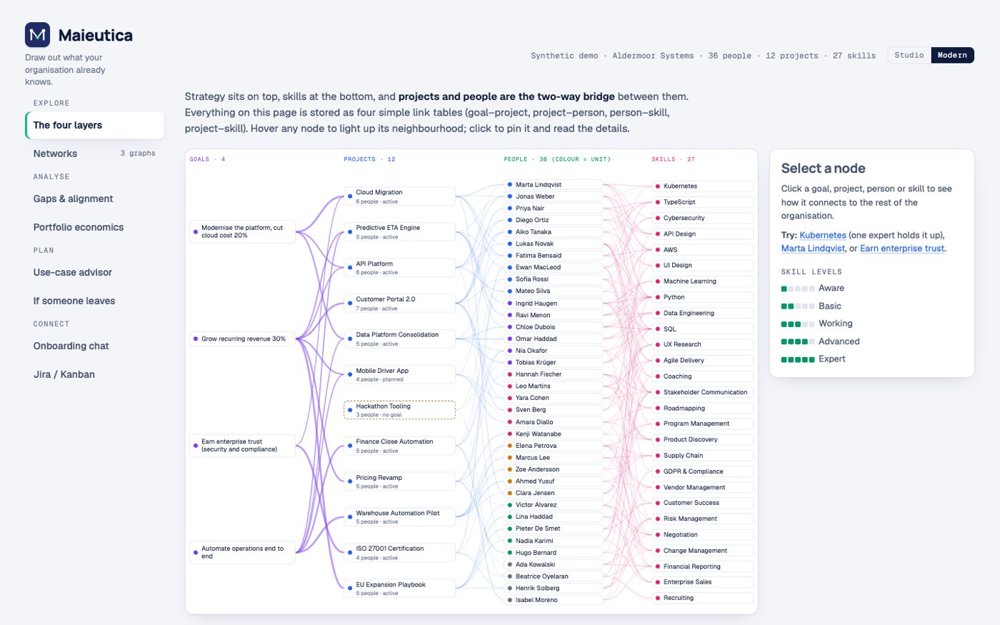

Map / Data science / Maieutica
Maieutica
Who can do this, and what breaks if someone leaves?
An organisation as one graph of goals, projects, people and skills, with the views leaders ask for. Built on a synthetic demo company.

4layers in one graph
8views
17slide pitch
The idea
The knowledge an organisation needs is usually already inside it, spread over people's heads and tickets. Maieutica draws it out.
How it works
- Model
Four link tables; the people, skill and use-case networks are computed from them.
- Measure
Betweenness and structural holes show who holds things together and where the team is fragile.
- Connect
A Jira or Kanban export feeds the graph, and a proposal can become an epic with stories.
What I learned
- Network measures answer management questions surprisingly directly, once the graph is right.
Built with
SQLite / PostgresD3PythonJira REST